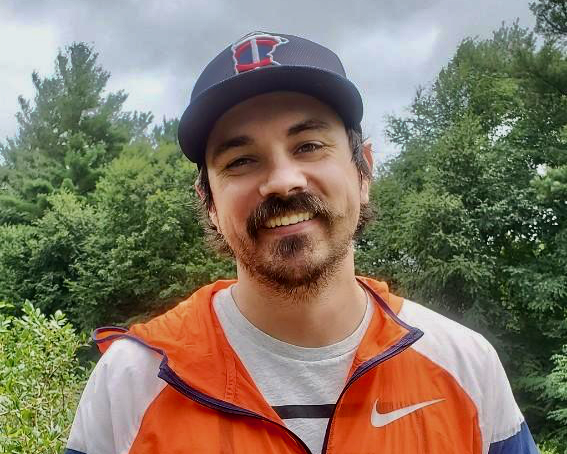

About Lee Bierman
Getting designers to think more like developers, and developers to think more like designers, is the key to optimizing agile software teams.
My name is Lee Bierman. I am the Design System Lead at Kessel Run, the US Air Force’s leading software innovation center. I am tasked with meeting the needs of over three dozen independent product teams in multiple workspaces, deployed all across the globe. This website tracks my journey and what I’ve learned implementing a design system at an organization of over 1000 people.
After graduating with a degree in playwriting I spent several years bouncing from job to job in Los Angeles while working to develop my writing style. As my restlessness grew I was approached by an industry leader in agile software development, curious if I would consider a new career path.
A year after starting my design career I was asked to unify all products in the organization around a single design system. Now I teach designers the fundamentals of the system, while also working to grow and develop the system I’ve built into something product teams can’t live without.
My goal is to enable product teams to work faster, build consistent user experiences through recognizable and repeatable user interface patterns, and foster better relationships between designers and developers at my organization.